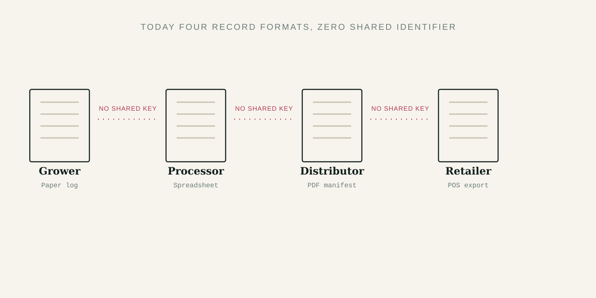
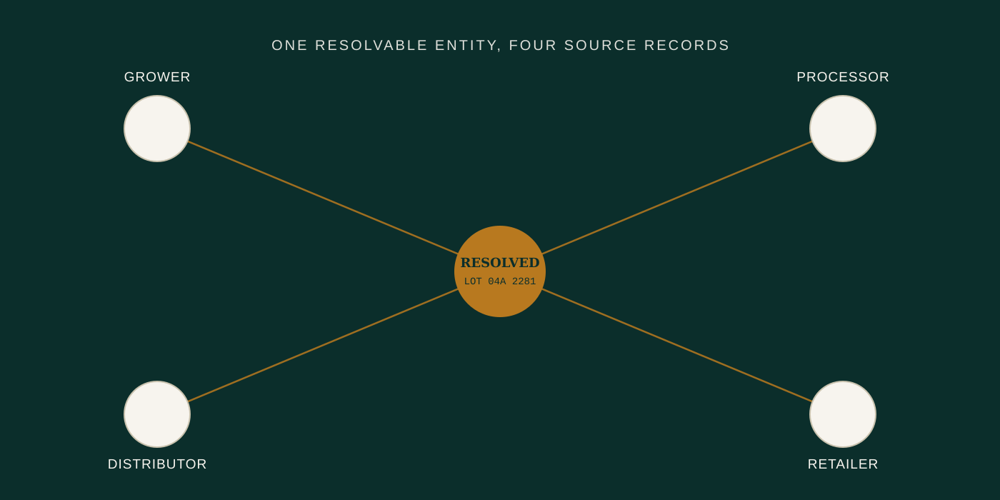

The hardest part of food traceability is not recording that something moved. It is preserving enough context about what moved, when, between whom, and under which identity so investigators can reconstruct a reliable chain of evidence when the records come from many different systems.
FSMA 204 brought that problem into sharper focus. Its framework asks covered entities to retain and share defined traceability information for foods on the Food Traceability List. Yet the larger institutional challenge is older than the rule itself: records are fragmented across growers, processors, distributors, laboratories, retailers, institutions, and regulators, each with different identifiers, formats, workflows, and levels of technical maturity.
Traceability is not one database. It is the ability to reconstruct a defensible chain of evidence across many databases and many organizations.
Exhibit AThe record is not the product
A purchase order, shipment record, laboratory result, lot code, receiving log, supplier name, and case label may all describe the same physical product from different perspectives. A traceability system therefore needs more than storage. It needs a way to resolve relationships among records without collapsing uncertainty or losing provenance.

Exhibit BEntity resolution is the hidden layer
In practice, the same organization or item can appear under multiple names, abbreviations, facility codes, addresses, product descriptions, or internal identifiers. Investigators need to know when two records probably refer to the same real-world entity—and when they do not.
A modern evidence layer can preserve source records while linking them through explicit, reviewable relationships. That approach supports investigation without pretending that every match is certain.

Exhibit CSpeed depends on structure before the incident
During an outbreak or recall, organizations often face a compressed decision window. The quality of the response depends heavily on whether records can be assembled and interpreted quickly enough to narrow what is actually affected. Better structure before an incident can reduce the amount of manual reconciliation required during one.
Exhibit DWhat modern food intelligence infrastructure should preserve
A useful architecture should preserve the original record, its source, time, permissions, and relationships to other records. It should support human review, make uncertainty visible, and allow institutions to reason across information without erasing where the information came from.
That is the broader infrastructure problem SAFEPLATE™ is being developed to explore: how permitted food-safety information can be connected into a more usable evidence environment without turning complex institutional decisions into opaque automation.
Further reading
- U.S. Food and Drug Administration — FSMA Final Rule on Requirements for Additional Traceability Records for Certain Foods.
- Federal Register materials related to the Food Traceability Rule and compliance timeline.
- CDC resources on foodborne outbreak investigation and surveillance.
- GS1 standards and guidance relevant to product identification and traceability.
SAFEPLATE™ is under active development by Function Media LLC. This article is educational and does not represent regulatory advice, a deployed system, certification, or government endorsement.